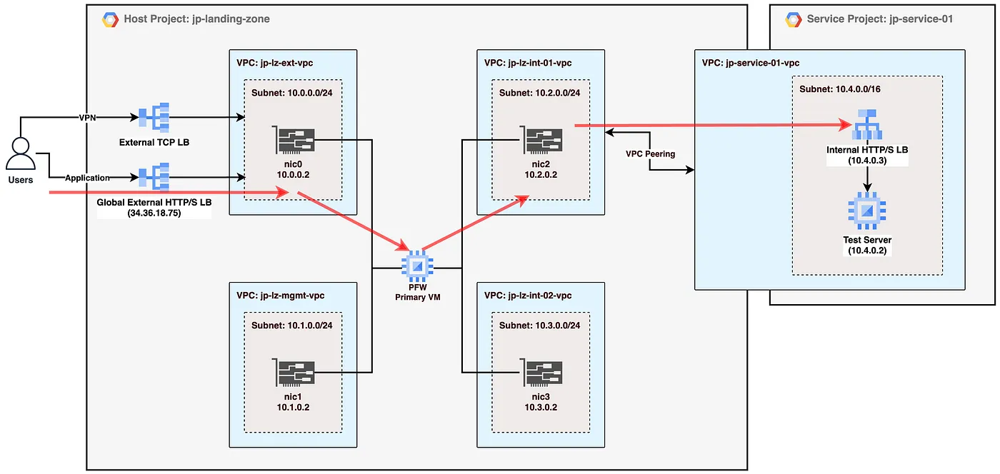
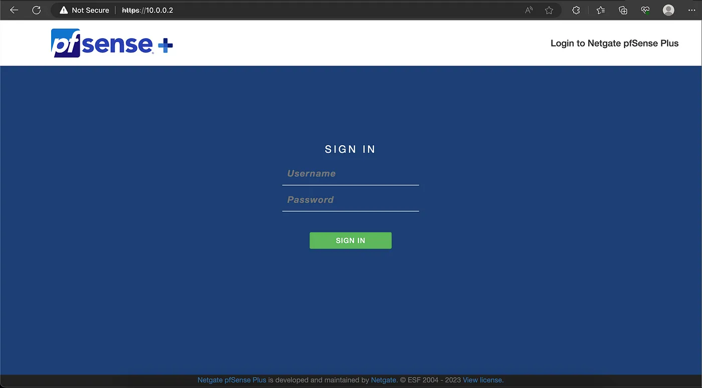
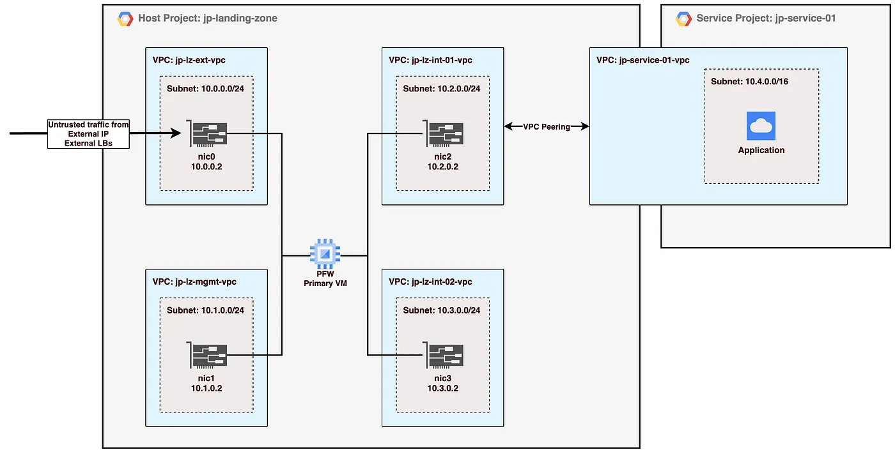
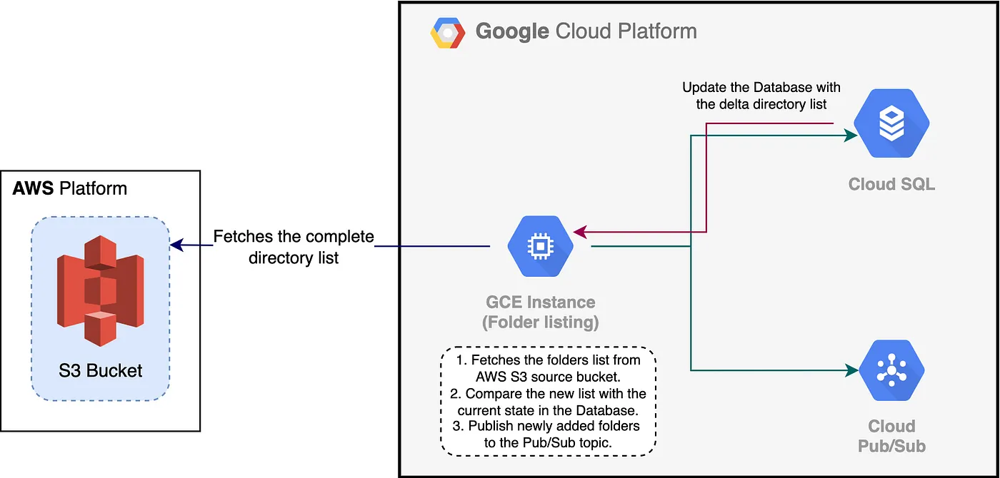
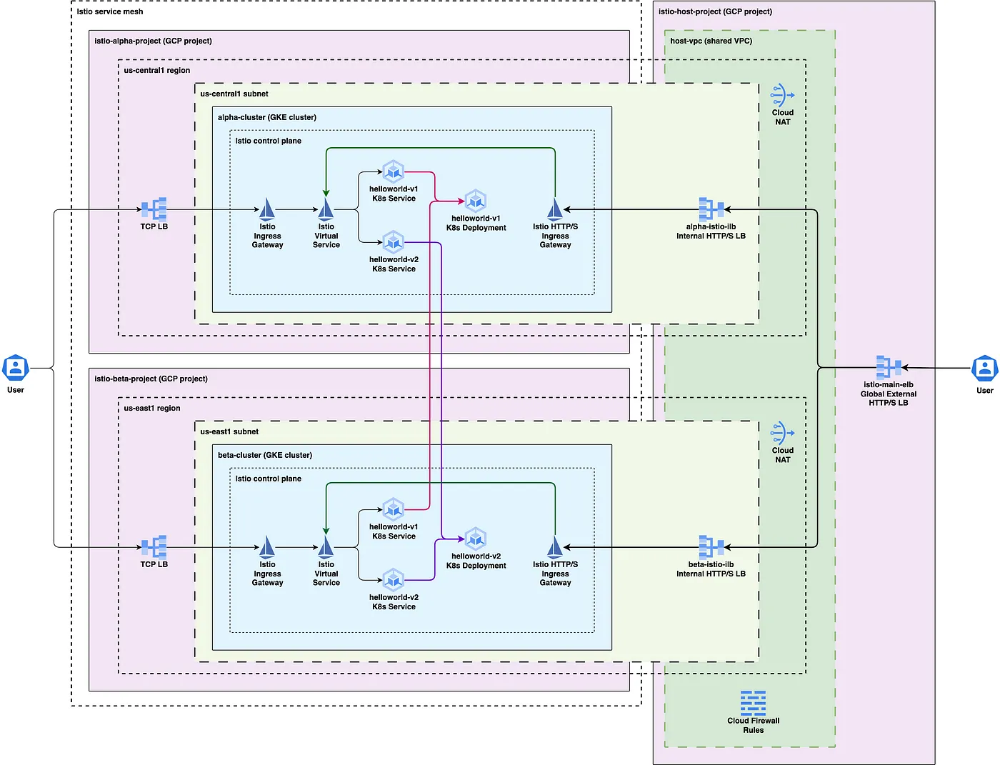
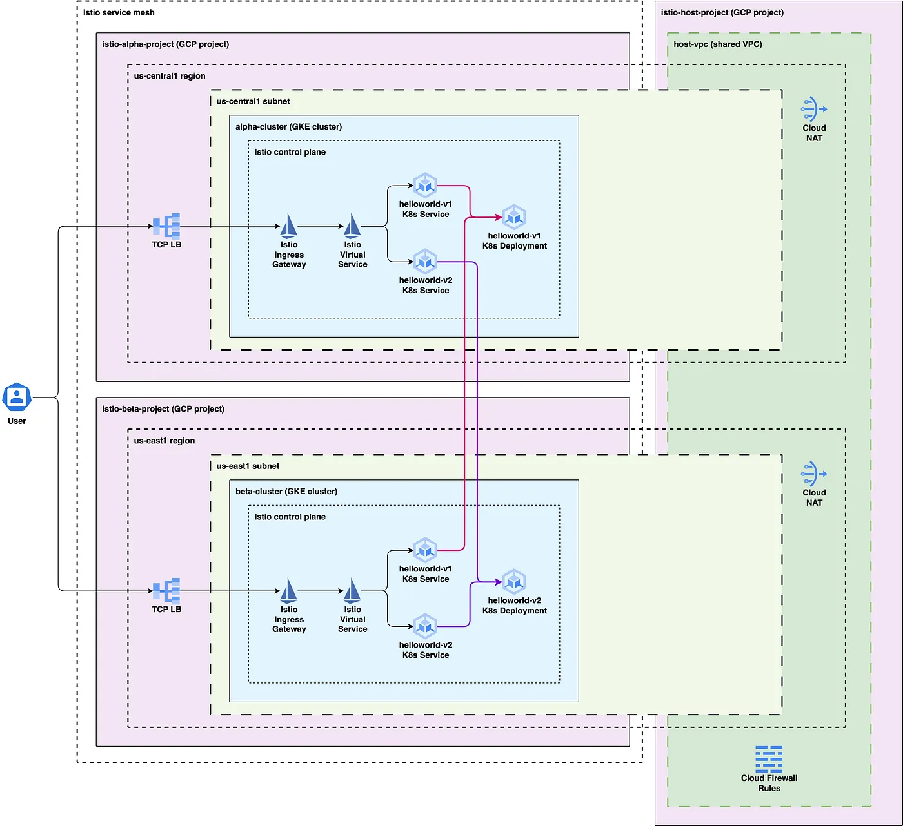
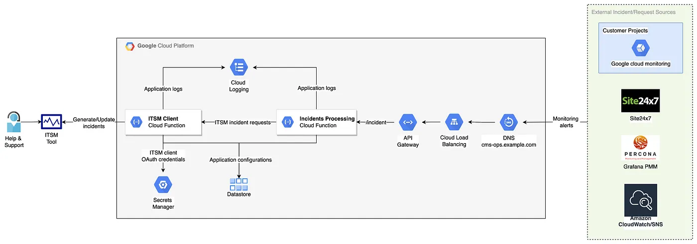
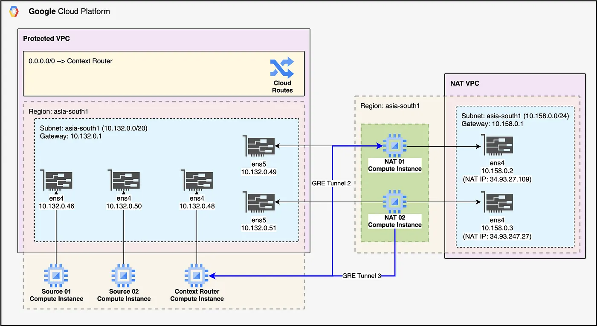
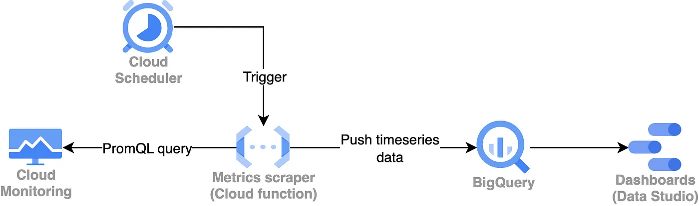
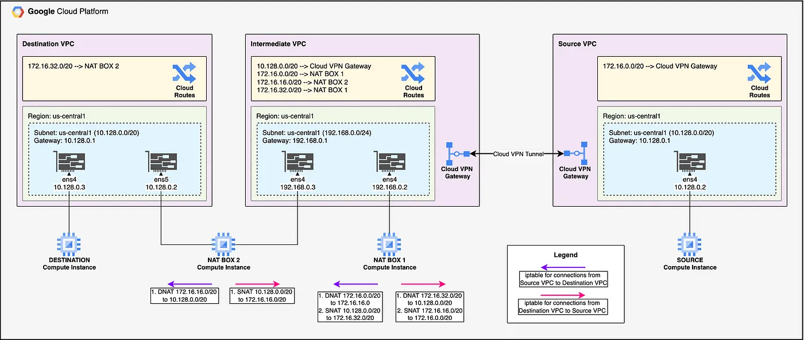

Website Builder Software
In the previous part of this tutorial we had configured OpenVPN access server along with external TCP LB on Google cloud. In this blog (Part III) we’ll be configuring a sample Nginx server behind the pfSense firewall in a spoke network (jp-service-01-vpc) peered to one of the hub networks (jp-lz-int-01-vpc) created in part I of the tutorial. The internet traffic will reach the application via a global HTTP/S LB in front of the PFW instances.

In the previous part of this tutorial we had done basic pfSense firewall setup on Google cloud. In this blog (Part II) we’ll be configuring OpenVPN access server on the PFW along with an external TCP load balancer. The TCP LB is an experiment (not production tested) to connect clients to the OpenVPN access server through the LB for all active HA setup (HA will be configured in the Part IV of the tutorial).

In this 4 part series of tutorial we’ll be configuring a landing zone project using Hub & Spoke network topology on Google cloud. In the first part (this blog) we’ll do basic configuration of VPCs and pfSense firewall VM on Google cloud.

We recently needed to migrate over a Petabyte of object storage from AWS S3 to GCS for one of our customers. Also, we had to keep the source and destination buckets in sync for the newly added objects on an hourly basis. While there are some native services offered by AWS and Google Cloud for object storage transfer, due to some specific requirements we had to design and build our own solution to migrate the data efficiently and in a cost-effective way.

The blog discusses enhancing a Multi-cluster Multi-primary Istio setup on GKE clusters located in separate regions within a Shared VPC. In the previous setup, the default Google Cloud TCP load balancer was used for Istio ingress, allowing non-standard TCP ports but not supporting certain managed L7 services like Cloud Armor WAF. The new blog focuses on modifying the existing Istio installation by deploying an additional Istio ingress controller for handling HTTPS traffic. This new ingress controller is configured as a ClusterIP service with NEG (network endpoint group) annotations to create a separate NEG. Regional backend services are then created for the NEG of each GKE cluster Istio ingress for HTTPS, enabling the configuration of load balancers to support L7 protection like Cloud Armor WAF for L7 attacks.

Since past couple of years, Kubernetes have become one of the most popular technologies for workload deployment due to it’s capabilities of advanced container orchestration, micro-service level networking, load-balancing, faster deployments, etc. Istio helps you extend Kubernetes capabilities by providing a service mesh with some advanced capabilities. In this blog we’ll deploy multi-primary Istio on two Google Kubernetes Engine (GKE) clusters each deployed in a separate region in a shared VPC.

Observability is vital for Cloud Managed Services, forming the foundation of Cloud reliability engineering and enabling the definition of Service Level Indicators (SLIs). It's essential for identifying and addressing issues in cloud infrastructure and applications, ranging from performance problems to severe disruptions. The blog discusses monitoring practices at Searce, covering Google Cloud and other providers like AWS and Azure. It also highlights how they preprocess alerts to reduce repetitive incident tickets. Additionally, it provides a tutorial on configuring quota alerts in Google Cloud using MQL and Terraform, part of their proactive alert policy setup for customers.

Google Cloud provides managed NAT gateway service for private workloads deployed inside your Google Cloud project VPC network. Cloud NAT is a regional, fully managed, resilient and scalable NAT gateway solution on Google Cloud with features like dynamic IP allocation, destination IP range based NAT IP allocation rules, endpoint independent mapping, etc. Sometimes there is a requirement where you might need to do NAT based on workload address (source IP) in the same VPC network, instead of destination IP ranges. Currently, this feature is not available in Google Cloud NAT and in this tutorial I’ve outlined workaround solution to achieve this using Linux boxes (VM instances). In this tutorial, we’ll be using GRE tunnels and Google cloud VPC supports GRE traffic with certain limitations.

Google cloud monitoring provides a wide range of predefined metrics (and you can push your own custom metrics) to monitor your Cloud, Multi-cloud and hybrid infrastructure. It lets you configure monitoring dashboards to centrally monitor the metrics and you can even scope monitoring metrics in multiple projects from a single Google cloud project. Though Google cloud monitoring dashboard is very useful for monitoring and has many features, many times you need to generate daily reports for the metrics and email deliver it to management or business people who, generally, do not have access to Google cloud console or do not prefer to go to the console. There is no readily available solution to achieve this but you can use other tools and services on top of cloud monitoring data in order to generate daily reports. One such tool you can use is Grafana along with its Google cloud monitoring plugin but this solution requires you to host the solution yourself or subscribe to Grafana cloud. But there is one solution which you can deploy with some level of coding and using completely serverless services on Google cloud (Cloud functions, Bigquery and Data Studio).

The challenge in hybrid or multi-cloud infrastructure is often dealing with overlapping networks. These networks were set up separately, and later, a need arises to connect them through a VPN. Sometimes they don't overlap, or their IP ranges can be changed. However, when they do overlap, a common method to connect them is using twice NAT, combining SNAT and DNAT to map the IP ranges to different ones. There are pricey proprietary solutions available, like Aviatrix Site2Cloud, which provide advanced features and reliability but might not be necessary for everyone. A cost-effective alternative is using iptables, a software solution. You can set up an intermediate network with two VM instances configured as NAT boxes with iptables, paying only for the resources you provision without incurring software licensing costs. This method allows you to connect overlapping networks more affordably.
Website Builder Software